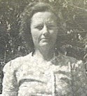

Lela Mae Mathis
1902–1951

Life Events
Born: September 26, 1902 — Madison County, Florida
Died: July 19, 1951 — Lafayette County, Florida
Family
Father: Daniel M. Mathis
Mother: Mary Frances Darling
Siblings
- Claude Mathis
- Frank Mathis
- Glover Mathis
- Jessie Mae Mathis
- Roy Eugene Mathis
- Rubin Ellis Mathis
- Shirley Lee Mathis
Spouse:
Children
Military Service
No military service information has been added.
Biography
In the 1920 United States Federal Census, Lela Mae Mathis Single$tary was recorded twice: once in the household of her parents, Daniel M. Mathis and Mary Frances Darling, and again in the household of her husband, George W. Singletary. The latter household included their infant son, Dewey Singletary, born August 23, 1919. The reason for Lela's duplicate enumeration is unknown.
Photos


Grave & Burial

Airline Cemetery, Mayo, Lafayette County, Florida
Sources
-
1910 U.S. Census — Daniel Mathis Family
Type: CensusThe 1910 United States Census records Daniel Mathis and his wife Mary living in the Norton Creek area of Madison County, Florida, with their children. Their daughter Lela was recorded as seven years old and born in Florida. Her age is consistent with her September 26, 1902, birth date.
Location: Norton Creek, Madison County, Florida, United States
Household Members:
- Daniel Mathis — Head, age 37 (handwriting unclear; possibly 27
- Mary Mathis — Wife, age 28
- Claude Mathis — Son, age 10
- Lela Mathis — Daughter, age 7
- Rubin Mathis — Son, age 5
- Frank Mathis — Son, age 3
- Unnamed — Infant son, age 5/12 (5 months
Supports: Daniel Mathis and Mary Frances Darling as Lela Mathis's parents, Lela Mathis's residence in Madison County, Florida, in 1910, Lela Mathis's age of seven in 1910, The Mathis family household in 1910
-
1917 Marriage License - G. W. Singletary and Lela May Mathis
Type: Marriage RecordMarriage license and return documenting the marriage of G. W. Singletary and Lela May Mathis. The license was issued in Lafayette County on March 5, 1917. The couple was married on March 6, 1917, and the record was filed on March 15, 1917. The record identifies the bride as "Lela May Mathis."
Location: Lafayette County, Florida, United States
Supports: Marriage of George William Singletary and Lela Mae Mathis on March 6, 1917, Marriage in Lafayette County, Florida, Contemporary record of Lela's name as Lela May Mathis
-
1920 U.S. Federal Census — Daniel M. Mathis Family
Type: Census1920 United States Federal Census, Lafayette County, Florida, Precinct No. 3, sheet 7B, lines 86–96. The household includes Dan M. Mathis (47), wife Mary (37), and their eight children: Claude (19), Lela (17), Rube (15), Frank (13), Roy (11), Glover (10), Shirley (6), and Jessie M. (2). Also residing in the household was Ella Truluck (15), identified as a niece. Ella was the daughter of Silas P. Truluck and Annie E. Mathis, Daniel's sister and a daughter of Malachi M. Mathis and Mary Williams.
-
1920 United States Census - George W. Singletary Household
Type: Census1920 United States Federal Census, Lafayette County, Florida, Enumeration District 86, sheet 15A, lines 20-24, enumerated January 28-29, 1920. George Singletary, age 24, is listed as head of household with his wife Lela M., age 17; their infant son Duie (Dewey); and George's younger sisters Alice, age 17, and Viola, age 14. The record establishes that Alice and Viola were living with their older brother by January 1920.
Location: Precinct No. 2, Mayo, Lafayette County, Florida, United States
Household Members:
- Gorg W. Singletary - Head
- Lela M. Singletary - Wife
- Duie Singletary - Son - age 5/12
- Allice Singletary - Sister
- Viola Singletary - Sister
Supports: George William Singletary was living in Lafayette County, Florida, in January 1920., George's household included his wife Lela M. and their infant son Dewey., George's younger sisters Alice and Viola were living in his household in 1920., Alice Singletary was approximately 17 years old and Viola Singletary was approximately 14 years old in January 1920.
-
1930 United States Census - George W. Singletary Household
Type: CensusThe 1930 United States Census records George W. Singletary and his wife, Lela M. Singletary, living in Election Precinct No. 3, Lafayette County, Florida, with their children Dewey, Lewie, Loyd M., Irena, and George W. Lela's brother Glover Mathis appears in a nearby Mathis household on the same census page.
Location: Election Precinct No. 3, Lafayette County, Florida, United States
Household Members:
- George W. Singletary - Head - age 34
- Lela M. Singletary - Wife - age 27
- Dewey Singletary - Son - age 10
- Lewie Singletary - Daughter - age 8
- Loyd M. Singletary - Son - age 6
- Irena Singletary - Daughter - age 4
- George W. Singletary - Son - age 2
Supports: George William Singletary living in Lafayette County, Florida, in 1930, Lela Mae Mathis living as George William Singletary's wife in 1930, Lela Mae Mathis recorded as age 27 in 1930, Dewey Singletary living as a son in the household, George and Lela Singletary living with five children in 1930, Lela Mae Mathis's brother Glover Mathis living nearby
-
1951 Florida Death Certificate - Lela Mae Singletary
Type: Death CertificateFlorida death certificate for Lela Mae Singletary, who died on July 19, 1951, in rural Mayo, Lafayette County, Florida. The certificate records her birthplace as Madison County, Florida, and identifies her parents as Daniel Mathis and Mary Darling. It records her birth date as September 26, 1905, and her age as 46. These two entries are internally inconsistent, and other family records support a birth date of September 26, 1902. The cause of death was recorded as acute gastritis. Lela was buried at Airline Cemetery in Lafayette County on July 20, 1951.
Location: Lafayette County, Florida, United States
Supports: Lela Mae Mathis Singletary's death on July 19, 1951, Lela Mae Mathis Singletary's birthplace as Madison County, Florida, Daniel Mathis as Lela Mae Mathis Singletary's father, Mary Darling as Lela Mae Mathis Singletary's mother, Lela Mae Mathis Singletary's burial at Airline Cemetery, Conflicting evidence concerning Lela Mae Mathis Singletary's birth year